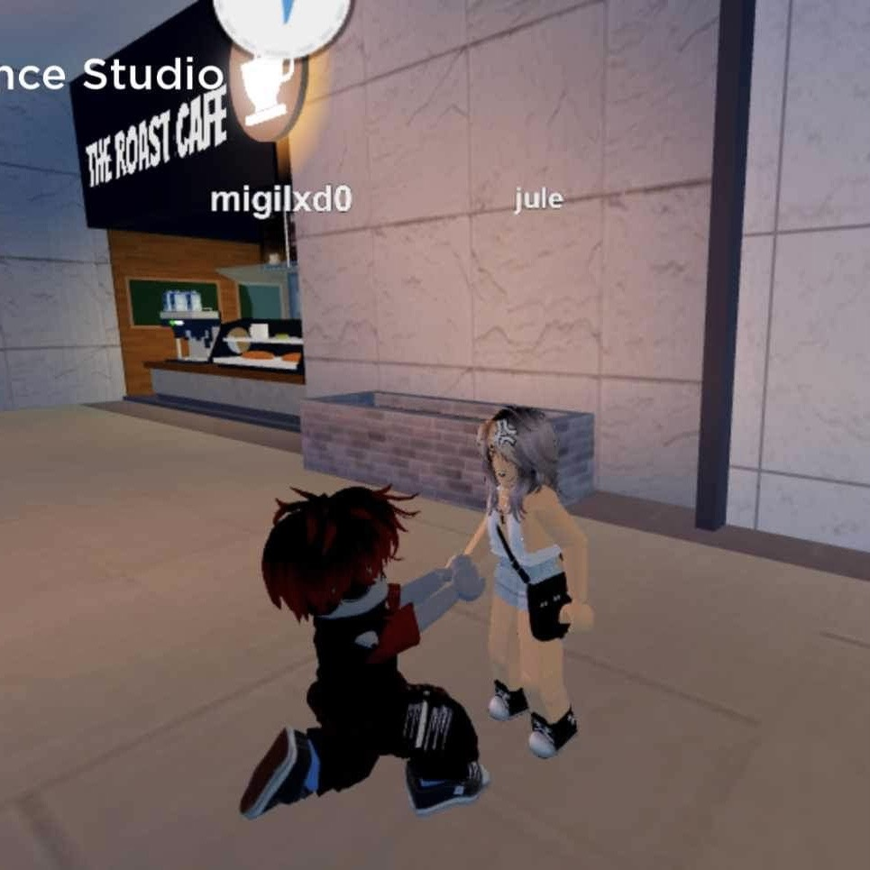
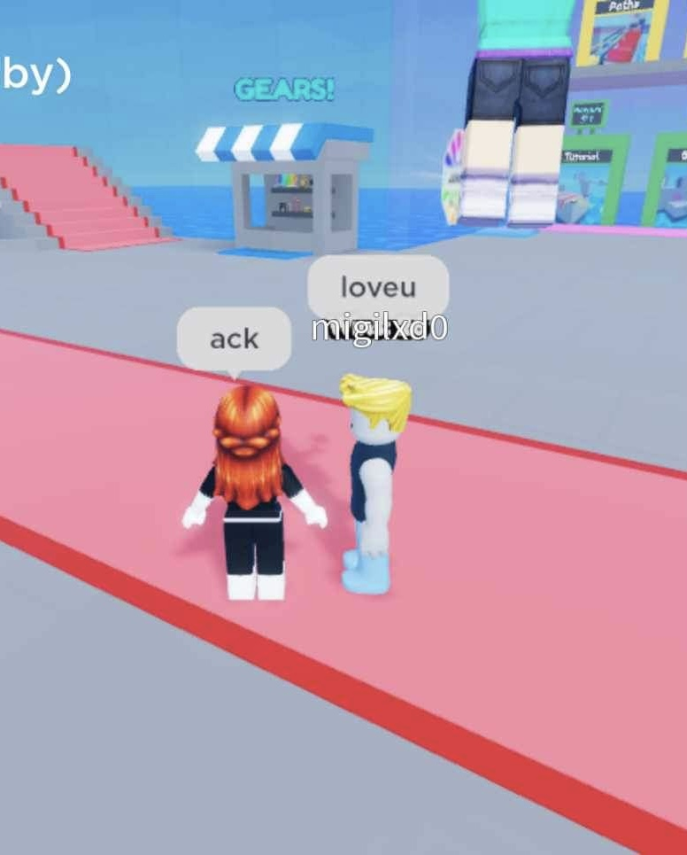
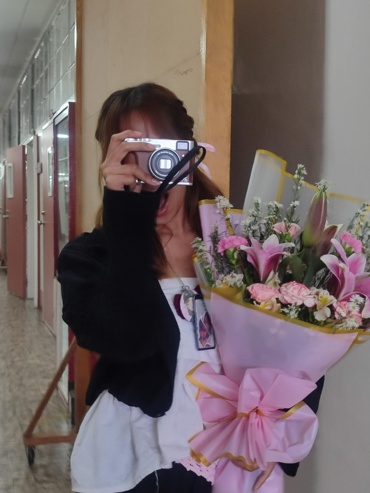

page 01
we were literally strangers

we literally started as strangers in a gc. there was nothing special about it at first. we were just two random people who happened to be in the same place, doing our own thing.
somehow, we started sending each other random photos and memes from pinterest. literal na weirdo behavior, but those random things became the reason we started talking more.
i started noticing your humor and how easy it was to have fun with you. the more we talked, the more i started looking forward to your messages.
somewhere between the jokes, memes, and random conversations, i started liking you. i didn’t even realize when it happened. it just did.
page 02
somewhere between the jokes

after that, our conversations slowly became more personal. we started talking in pm, and i got to know more about you beyond the random memes and jokes.
the more i learned about you, the more i realized how much i enjoyed having you around. you had this humor that somehow always made me want to keep talking to you.
you weren’t just some random person from a gc anymore. you became someone whose messages could instantly make my day better.
and without even realizing it, i started falling for you.
page 03
july 12, 2023 ♡
then came july 12, 2023. the day you said yes to me. after everything that started from a random gc and random pinterest memes, somehow we ended up here.
what makes it even more special is that august 12 was supposed to become our first monthsary and your 18th birthday.
our first monthsary falling on your birthday felt like such a cute coincidence. it was one of those little things that made our story feel even more special.
you went from being someone i didn’t even know to someone i wanted to spend my time with, make happy, and spoil whenever i could.
page 04
everything we went through
of course, our story was never perfect. we had our happy moments, but we also had arguments, misunderstandings, and so many cool-offs that we probably stopped counting.
there were moments when everything felt too difficult and we thought maybe it would be better to stop.
but somehow, we always found our way back to each other. even when we were upset, even when things were complicated, we couldn’t really stay away for too long.
there was always something that made us want to talk again.
page 05
distance ♡
eventually, distance became one of the hardest things we had to deal with.
i know there were things you wanted from me that i couldn’t always give, and i know sometimes saying i love you wasn’t enough when what you really needed was for me to actually be there.
i wanted to give you the love you deserved. i wanted to be there whenever you needed me, make you happy, spoil you, and give you everything i could.
but distance made some of those things harder than i wanted them to be.
page 06
and then there’s us 🌹
i honestly wasn’t planning to write this part because i know asking you again isn’t something simple. after everything that happened between us, i know there are probably things you still remember, things that hurt, and things that made you question if i really meant everything i said. but even after all of that, there’s still something i’ve been wanting to tell you.
i tried to distance myself from you before. i tried convincing myself that maybe it was better if i stayed away because i knew i couldn’t always give you the kind of love you wanted from me. i thought stepping back would save you from being disappointed in me, but i realize now that i probably just made you more confused and hurt. i should’ve told you what was really happening instead of making you figure it out on your own.
the truth is, i never stopped loving you. even when i wasn’t talking to you, even when you pushed me away, even when you blocked me because you thought i didn’t care anymore, i still cared. i was just struggling with myself and trying to figure out how i could love you properly when i knew i still had so much to learn. and even now, i’m still trying my best to become someone who can give you the love you deserve.
i can’t promise that everything will suddenly become perfect if you let me try again. i can’t promise that distance won’t be difficult, or that i’ll never make another mistake. but i can promise that i’ll try to communicate better this time. i’ll tell you when something is wrong instead of disappearing, and i’ll do my best to make you feel loved instead of making you question whether i still do.
so after everything we’ve been through, i don’t want to pretend that my feelings disappeared just because our relationship ended. you’re still someone i choose, someone i care about, and someone i still want to make happy. i’m not asking you to forget everything that happened or to give me an answer just because i made this for you. i just want to be honest with you one more time. juli, would you let me court you again? ♡
page 07
the things i don’t say enough ♡
you’re the kind of person who loves deeply. you’re the type of person who would do almost anything just to make someone happy.
you give so much, and sometimes i don’t think you realize how much that means. you have this way of making people feel cared for without even trying too hard.
i’ve noticed all the little things you’ve done for me. the random messages, the jokes, the effort, the way you cared, and all the little ways you made me feel loved.
even the things you probably don’t remember anymore are things i still remember. and honestly, those little things are some of the reasons why i still care about you this much.
page 08
happy birthday, juli ♡
happy birthday to one of the most important people i’ve ever had in my life. i hope today reminds you how loved and appreciated you are.
this is your fourth birthday that i get to celebrate with you, and honestly, wdym we’re not even together anymore and i’m still here beside you to celebrate your birthday?
i know things between us are complicated now, but that doesn’t change how much i appreciate you. i’m still grateful for every memory, every laugh, every conversation, and every moment you gave me.
i hope you get everything you deserve. i hope you continue being the loving person you are, and i hope you never forget that someone out here will always be genuinely happy to see you happy.

the gift i gave you last year ♡
page 09
three songs for you ♡
i wanted to leave you something you could listen to while reading this.
each song reminds me of a different part of our story. different memories, different feelings, but somehow they all lead back to you.
01
I Found Her
dedicated to the beginning of us ♡
02
Sagip
dedicated to everything we survived ♡
03
Bawat Piyesa
dedicated to every piece of our story ♡
page 10
one last question ♡
i know we’ve already been through so much. i know there are things that cannot simply disappear because i wrote a long message.
i’m not asking you to forget the past. i’m not asking you to pretend everything was perfect. i just want to give us another chance to do things differently.
i don’t want this little website to pressure you into anything. i made it because there were things i couldn’t properly say out loud, and somehow writing them down felt easier.
whatever you decide, i hope you know that everything i wrote here came from a place of honesty.